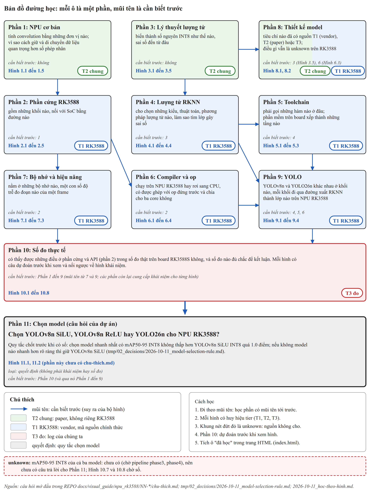

Hình 0.1 h0-1-ban-do-khoi

Bản đồ đường học gồm một ô cho mỗi phần 1 đến 11, mỗi ô ghi câu hỏi mở đầu rút gọn, số hình, huy hiệu tier và phần cần biết trước; mũi tên là quan hệ "cần biết trước". Màu ô theo tier: xanh lá là T2 chung (phần 1, 3), xanh dương là T1 RK3588 (phần 2, 4 đến 7, 9), nửa xanh lá nửa xanh dương là phần 8 (Hình 8.1 là T2, Hình 8.2 là T1), đỏ nhạt là T3 đo (phần 10), xám là quyết định (phần 11). Các mũi tên là suy ra của bộ hình từ dòng "Khái niệm" trong các `chu-thich.md` (Phần 4 và 5 tới Phần 9 là suy ra từ đường xuất của Hình 9.3). Ô cuối là câu hỏi của dự án: chọn YOLOv8n SiLU, YOLOv8n ReLU hay YOLO26n cho NPU RK3588, theo quy tắc đã chốt trước khi có số; mAP50-95 INT8 của ba model chưa có nên câu hỏi này chưa trả lời được (khung unknown). Hộp "Cách học": đi theo mũi tên, mỗi hình có huy hiệu tier, khung đỏ là unknown, phần 10 dự đoán trước khi xem, tích ô "đã học" trong trang HTML.
Nguồn (64 dòng)
| Nội dung | Tier | Nguồn | Nguyên văn ngắn |
|---|---|---|---|
| Câu hỏi mở đầu của Phần 1 (rút gọn trên hình) | tính | REPO docs/tools/visual_guide/npu_rk3588/01-npu-co-ban/chu-thich.md | tính convolution bằng những đơn vị nào |
| Câu hỏi mở đầu của Phần 1 (rút gọn trên hình) | tính | REPO docs/tools/visual_guide/npu_rk3588/01-npu-co-ban/chu-thich.md | vì sao cách giữ và di chuyển dữ liệu quan trọng hơn số phép nhân |
| Câu hỏi mở đầu của Phần 2 (rút gọn trên hình) | tính | REPO docs/tools/visual_guide/npu_rk3588/02-phan-cung-rk3588/chu-thich.md | gồm những khối nào, nối với SoC bằng đường nào |
| Câu hỏi mở đầu của Phần 3 (rút gọn trên hình) | tính | REPO docs/tools/visual_guide/npu_rk3588/03-ly-thuyet-luong-tu/chu-thich.md | biến thành số nguyên INT8 như thế nào, sai số đến từ đâu |
| Câu hỏi mở đầu của Phần 4 (rút gọn trên hình) | tính | REPO docs/tools/visual_guide/npu_rk3588/04-luong-tu-rknn/chu-thich.md | cho chọn những kiểu, thuật toán, phương pháp lượng tử nào, làm sao tìm lớp gây sai số |
| Câu hỏi mở đầu của Phần 5 (rút gọn trên hình) | tính | REPO docs/tools/visual_guide/npu_rk3588/05-toolchain/chu-thich.md | phải gọi những hàm nào ở đâu |
| Câu hỏi mở đầu của Phần 5 (rút gọn trên hình) | tính | REPO docs/tools/visual_guide/npu_rk3588/05-toolchain/chu-thich.md | phần mềm trên board xếp thành những tầng nào |
| Câu hỏi mở đầu của Phần 6 (rút gọn trên hình) | tính | REPO docs/tools/visual_guide/npu_rk3588/06-compiler-op/chu-thich.md | chạy trên NPU RK3588 hay rơi sang CPU |
| Câu hỏi mở đầu của Phần 6 (rút gọn trên hình) | tính | REPO docs/tools/visual_guide/npu_rk3588/06-compiler-op/chu-thich.md | được ghép với op đứng trước và chia cho ba core không |
| Câu hỏi mở đầu của Phần 7 (rút gọn trên hình) | tính | REPO docs/tools/visual_guide/npu_rk3588/07-bo-nho-hieu-nang/chu-thich.md | nằm ở những bộ nhớ nào, một con số độ trễ đo đoạn nào của một frame |
| Câu hỏi mở đầu của Phần 8 (rút gọn trên hình) | tính | REPO docs/tools/visual_guide/npu_rk3588/08-thiet-ke-model/chu-thich.md | tiêu chí nào đã có nguồn T1 (vendor), T2 (paper) hoặc T3 |
| Câu hỏi mở đầu của Phần 8 (rút gọn trên hình) | tính | REPO docs/tools/visual_guide/npu_rk3588/08-thiet-ke-model/chu-thich.md | vẫn là unknown trên RK3588 |
| Câu hỏi mở đầu của Phần 9 (rút gọn trên hình) | tính | REPO docs/tools/visual_guide/npu_rk3588/09-yolo/chu-thich.md | YOLOv8n và YOLO26n khác nhau ở khối nào |
| Câu hỏi mở đầu của Phần 9 (rút gọn trên hình) | tính | REPO docs/tools/visual_guide/npu_rk3588/09-yolo/chu-thich.md | đi qua đường xuất RKNN thành lớp nào trên NPU RK3588 |
| Câu hỏi mở đầu của Phần 10 (rút gọn trên hình) | tính | REPO docs/tools/visual_guide/npu_rk3588/10-so-do-thuc-te/chu-thich.md | Những điều ở phần cứng và API (phần 2) |
| Câu hỏi mở đầu của Phần 10 (rút gọn trên hình) | tính | REPO docs/tools/visual_guide/npu_rk3588/10-so-do-thuc-te/chu-thich.md | có thấy được trong số đo thật trên board RK3588S không, và số đo nào đủ chắc để kết luận |
| Phần 1: hình đầu và tier | tính | REPO docs/tools/visual_guide/npu_rk3588/01-npu-co-ban/chu-thich.md | Hình 1.1 (h1-1-mac-pe) [T2 chung] |
| Phần 1: hình cuối (số hình của ô) | tính | REPO docs/tools/visual_guide/npu_rk3588/01-npu-co-ban/chu-thich.md | Hình 1.5 (h1-5-systolic-da-loi) |
| Phần 2: hình đầu và tier | tính | REPO docs/tools/visual_guide/npu_rk3588/02-phan-cung-rk3588/chu-thich.md | Hình 2.1 (h2-1-npu-trong-soc) [T1 RK3588] |
| Phần 2: hình cuối (số hình của ô) | tính | REPO docs/tools/visual_guide/npu_rk3588/02-phan-cung-rk3588/chu-thich.md | Hình 2.5 (h2-5-mot-job) |
| Phần 3: hình đầu và tier | tính | REPO docs/tools/visual_guide/npu_rk3588/03-ly-thuyet-luong-tu/chu-thich.md | Hình 3.1 (h3-1-affine) [T2 chung] |
| Phần 3: hình cuối (số hình của ô) | tính | REPO docs/tools/visual_guide/npu_rk3588/03-ly-thuyet-luong-tu/chu-thich.md | Hình 3.5 (h3-5-ptq-qat) |
| Phần 4: hình đầu và tier | tính | REPO docs/tools/visual_guide/npu_rk3588/04-luong-tu-rknn/chu-thich.md | Hình 4.1 (h4-1-ho-tro-rk3588) [T1 RK3588] |
| Phần 4: hình cuối (số hình của ô) | tính | REPO docs/tools/visual_guide/npu_rk3588/04-luong-tu-rknn/chu-thich.md | Hình 4.4 (h4-4-mau-thuan-tai-lieu) |
| Phần 5: hình đầu và tier | tính | REPO docs/tools/visual_guide/npu_rk3588/05-toolchain/chu-thich.md | Hình 5.1 (h5-1-chuoi-api) [T1 RK3588] |
| Phần 5: hình cuối (số hình của ô) | tính | REPO docs/tools/visual_guide/npu_rk3588/05-toolchain/chu-thich.md | Hình 5.3 (h5-3-stack-board) |
| Phần 6: hình đầu và tier | tính | REPO docs/tools/visual_guide/npu_rk3588/06-compiler-op/chu-thich.md | Hình 6.1 (h6-1-npu-hay-cpu) [T1 RK3588] |
| Phần 6: hình cuối (số hình của ô) | tính | REPO docs/tools/visual_guide/npu_rk3588/06-compiler-op/chu-thich.md | Hình 6.4 (h6-4-layout) |
| Phần 7: hình đầu và tier | tính | REPO docs/tools/visual_guide/npu_rk3588/07-bo-nho-hieu-nang/chu-thich.md | Hình 7.1 (h7-1-duong-du-lieu) [T1 RK3588] |
| Phần 7: hình cuối (số hình của ô) | tính | REPO docs/tools/visual_guide/npu_rk3588/07-bo-nho-hieu-nang/chu-thich.md | Hình 7.3 (h7-3-cong-cu-do) |
| Phần 9: hình đầu và tier | tính | REPO docs/tools/visual_guide/npu_rk3588/09-yolo/chu-thich.md | Hình 9.1 (h9-1-v8n-26n) [T1 RK3588] |
| Phần 9: hình cuối (số hình của ô) | tính | REPO docs/tools/visual_guide/npu_rk3588/09-yolo/chu-thich.md | Hình 9.4 (h9-4-ma-tran-tieu-chi) |
| Phần 10: hình đầu và tier | tính | REPO docs/tools/visual_guide/npu_rk3588/10-so-do-thuc-te/chu-thich.md | Hình 10.1 (h10-1-silu-relu) [T3 đo] |
| Phần 10: hình cuối (số hình của ô) | tính | REPO docs/tools/visual_guide/npu_rk3588/10-so-do-thuc-te/chu-thich.md | Hình 10.8 (h10-8-do-tre-map) |
| Phần 8: hình 8.1 là T2 chung (ô nửa xanh lá) | tính | REPO docs/tools/visual_guide/npu_rk3588/08-thiet-ke-model/chu-thich.md | Hình 8.1 (h8-1-reparam) [T2 chung] |
| Phần 8: hình 8.2 là T1 RK3588 (ô nửa xanh dương) | tính | REPO docs/tools/visual_guide/npu_rk3588/08-thiet-ke-model/chu-thich.md | Hình 8.2 (h8-2-checklist) [T1 RK3588] |
| Phần 11: hình 11.1 | tính | REPO docs/tools/visual_guide/npu_rk3588/README.md | h11-1-quy-tac |
| Phần 11: hình 11.2 | tính | REPO docs/tools/visual_guide/npu_rk3588/README.md | h11-2-unknown |
| Mũi tên 1 -> 2 (hình 1.1 nối về hình 2.2, 2.3) | tính | REPO docs/tools/visual_guide/npu_rk3588/01-npu-co-ban/chu-thich.md | Khái niệm: Hình 2.2, Hình 2.3 |
| Mũi tên 3 -> 4 (hình 3.1 nối về hình 4.1) | tính | REPO docs/tools/visual_guide/npu_rk3588/03-ly-thuyet-luong-tu/chu-thich.md | Khái niệm: Hình 4.1 |
| Mũi tên 4 -> 5 (hình 5.1 nối về hình 4.1) | tính | REPO docs/tools/visual_guide/npu_rk3588/05-toolchain/chu-thich.md | Khái niệm: Hình 4.1 |
| Mũi tên 2 -> 6 (hình 6.1 nối về hình 2.4) | tính | REPO docs/tools/visual_guide/npu_rk3588/06-compiler-op/chu-thich.md | Khái niệm: Hình 2.4, Hình 8.2, Hình 9.3 |
| Mũi tên 2 -> 7 (hình 7.1 nối về hình 2.1 đến 2.3) | tính | REPO docs/tools/visual_guide/npu_rk3588/07-bo-nho-hieu-nang/chu-thich.md | Khái niệm: Hình 2.1, Hình 2.2, Hình 2.3, Hình 5.2, Hình 5.3 |
| Mũi tên 3 -> 8 và ô 8 cần Hình 3.5, 6.3 (hình 8.1 nối về hình 3.5, 6.3) | tính | REPO docs/tools/visual_guide/npu_rk3588/08-thiet-ke-model/chu-thich.md | Khái niệm: Hình 3.5, Hình 6.3 |
| Mũi tên 6 -> 9 (hình 9.3 nối về hình 6.2, 6.3) | tính | REPO docs/tools/visual_guide/npu_rk3588/09-yolo/chu-thich.md | Khái niệm: Hình 6.2, Hình 6.3 |
| Mũi tên 4 -> 9 và 5 -> 9: suy ra của bộ hình từ đường xuất RKNN (Hình 9.3) đi qua toolkit (Phần 5) và lượng tử (Phần 4) | tính | REPO docs/tools/visual_guide/npu_rk3588/09-yolo/chu-thich.md | (số học) |
| Mũi tên 7 -> 10 (hình 10.2 nối về hình 7.3, 6.2, 9.3) | tính | REPO docs/tools/visual_guide/npu_rk3588/10-so-do-thuc-te/chu-thich.md | Khái niệm: Hình 7.3, Hình 6.2, Hình 9.3 |
| Mũi tên 9 -> 10 (hình 10.4 nối về hình 9.1, 9.3, 1.4) | tính | REPO docs/tools/visual_guide/npu_rk3588/10-so-do-thuc-te/chu-thich.md | Khái niệm: Hình 9.1, Hình 9.3, Hình 1.4 |
| Mũi tên 10 -> 11 (hình 10.8 nối về hình 11.1) | tính | REPO docs/tools/visual_guide/npu_rk3588/10-so-do-thuc-te/chu-thich.md | Khái niệm: Hình 11.1, Hình 7.2 |
| Phần 10 cần Phần 1 đến 9: suy ra của bộ hình | tính | REPO tmp/02_decisions/2026-10-11_hoc-theo-hinh.md | (số học) |
| Phần 10: mỗi biểu đồ có câu dự đoán và link hai chiều với hình khái niệm | tính | REPO tmp/02_decisions/2026-10-11_hoc-theo-hinh.md | link hai chiều với hình khái niệm |
| Câu hỏi dự án: ba ứng viên | tính | REPO tmp/02_decisions/2026-10-11_model-selection-rule.md | chọn model triển khai trên RK3588: YOLOv8n SiLU, YOLOv8n ReLU, YOLO26n |
| Quy tắc: chọn model nhanh nhất | tính | REPO tmp/02_decisions/2026-10-11_model-selection-rule.md | nhanh nhất |
| Quy tắc: mAP50-95 INT8 không thấp hơn YOLOv8n SiLU INT8 quá 1.0 điểm | tính | REPO tmp/02_decisions/2026-10-11_model-selection-rule.md | không thấp hơn YOLOv8n SiLU INT8 quá 1.0 điểm |
| Quy tắc: không rõ thì giữ YOLOv8n SiLU | tính | REPO tmp/02_decisions/2026-10-11_model-selection-rule.md | giữ YOLOv8n SiLU |
| Quy tắc chốt trước khi có số | tính | REPO tmp/02_decisions/2026-10-11_model-selection-rule.md | Vì vậy quy tắc được chốt trước |
| Chưa có mAP INT8 của model nào trong ba model | tính | REPO tmp/02_decisions/2026-10-11_model-selection-rule.md | Chưa có AP INT8 của bất kỳ model nào trong ba model |
| Hình 10.7 và 10.8 chờ pipeline phase3, phase4 | tính | REPO docs/tools/visual_guide/npu_rk3588/10-so-do-thuc-te/chu-thich.md | Trạng thái: chờ pipeline phase3 và phase4 |
| Cách học 2: huy hiệu tier | tính | REPO docs/tools/visual_guide/README.md | Huy hiệu tier |
| Cách học 3: khung đỏ là unknown, nguồn không cho | tính | REPO docs/tools/visual_guide/README.md | điều nguồn không cho; không đoán |
| Cách học 4: Phần 10 dự đoán trước khi xem | tính | REPO docs/tools/visual_guide/README.md | Dự đoán trước khi xem |
| Cách học 5: ô đã học trong trang HTML | tính | REPO tmp/02_decisions/2026-10-11_hoc-theo-hinh.md | ô "đã học" (localStorage) |
| Cách học 1: thứ tự học theo mũi tên (suy ra của bộ hình) | tính | REPO tmp/02_decisions/2026-10-11_hoc-theo-hinh.md | (số học) |
| Nội dung unknown: mAP INT8 chưa có | tính | REPO tmp/02_decisions/2026-10-11_model-selection-rule.md | Chưa có AP INT8 của bất kỳ model nào trong ba model |